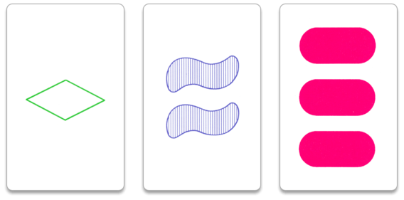
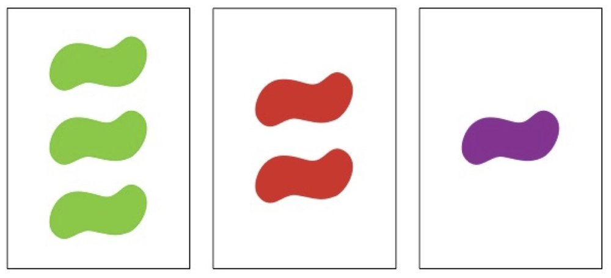
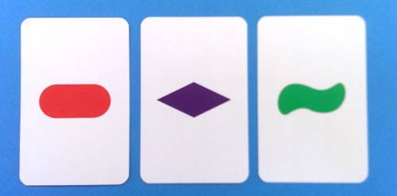
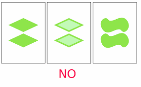

A trio of cards is called a SET, if for each of the four characteristics:
SET!



NOT SET!

What card(s) (if any) could you add to form a SET?
What card(s) (if any) could you add to form a SET?
Given any two cards, can you always add a card to form a SET? How many choices do you have?
Take 3 cards which do not form a SET and place them in a corner as depicted.
Fill out a three by three plane so that each row, column and diagonal forms a SET.
A plane is a collection of points and lines (sets of points) satisfying the following axioms:
Let point be cards, and lines be SETs. Is the three by three array you created a plane?
Does your plane satisfy the Euclidean Axiom?
If two distinct lines intersect, they do so at a unique point.
Is it true in your plane?
Can you prove it?
Each card can be encoded as a vector \[(w,x,y,z)\in \mathbb{Z}_3^4\] measuring (Shape, Color, Shade, Number).
\(2,0,0,0\)
Each card can be encoded as a vector \[(w,x,y,z)\in \mathbb{Z}_3^4\] measuring (Shape, Color, Shade, Number).
\(1,2,2,2\)
Each card can be encoded as a vector \[(w,x,y,z)\in \mathbb{Z}_3^4\] measuring (Shape, Color, Shade, Number).
Can you parameterize the SETs that you have found?